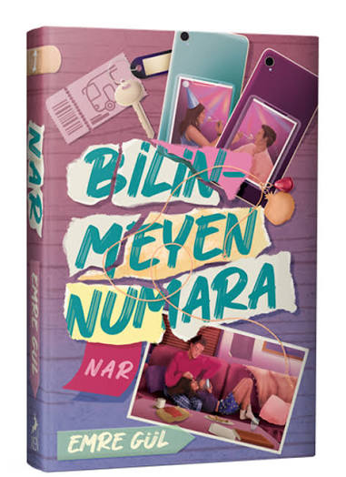

Hep yıldız kayarken dilek tutulurdu, değil mi? Onlar saatlerce bir yıldızın kaymasını bekleyip, o kaydıktan sonra tutmuşlardı dileklerini. Çünkü onlar için, kayan yıldız gökyüzüne ihanet etmişti. Bu yüzden dileklerini ona değil, gökyüzünden vazgeçmeyen tüm yıldızlara sunmuşlardı.
Sırf âşık olduğu adama ulaşmak uğruna saçlarına kıyan Rapunzel’in hikâyesini dinlediğinden beri, masal gibi bir dostluğun, masallardaki aşklardan daha değerli olduğuna inanan Çınar Duman’ın, dört yıldır aynı evi paylaştığı bal kızı Balın İmge ile olan dostluğu bir yaz tatili projesiyle bir şehirden diğerine uzanacaktır.
Proje için seçilen diğer altı öğrenciden kimisi bu ikiliyle samimi dostluklar içerisine girer, kimisi de gizli kimlikler ardında çeşitli oyunlar düzenlemekten geri kalmaz.
Ve bir de mesajcı...
İkili, hemen her gün bir şekilde kendilerine ulaşan mesajcıyı bulmak için çabalar. Çıktıkları yolda daha birçok şeyi de beraberinde getirir zaman. Bir şeyler değişir, bir şeyler gelişir fakat ikili her şeye rağmen dostluklarına sıkıca tutunmaktan vazgeçmez.
“Lütfen… Lütfen sonsuz olalım!”